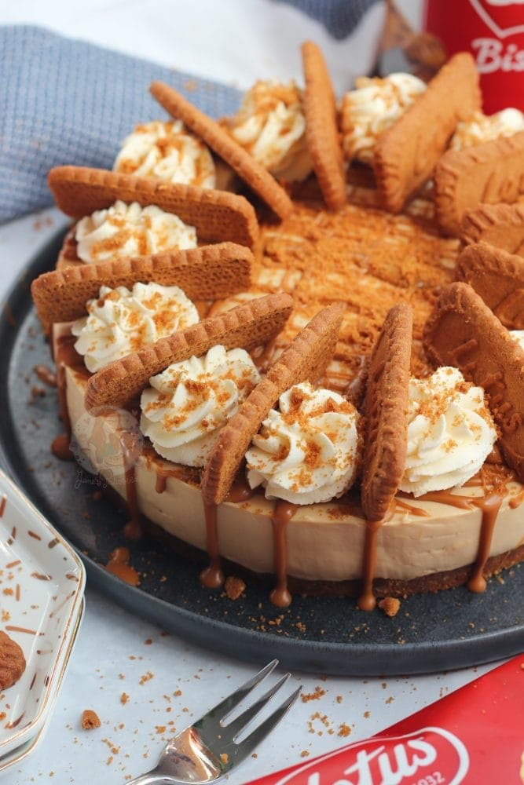

Cheesecake

Description
A delicious No-Bake Biscoff Cheesecake, with a Lotus Base, sprinkled with more biscuits and whipped cream and a Biscoff Drizzle.
Ingredients
Biscuit Base
- 300g Lotus/Biscoff Biscuits
- 125g Unsalted Butter/Stork (melted)
Cheesecake Filling
- 500g Cream Cheese (full fat)
- 100g Icing Sugar
- 250g Biscoff Spread (smooth/crunchy)
- 1 tsp Vanilla Extract
- 300ml Double Cream
Instructions
- Blitz the biscuits for the base in a food processor until they're a fine crumb. Mix with the melted butter and press down firmly into an 8"/20cm Deep Springform Tin
- With an electric mixer (I use my KitchenAid) Mix the cream cheese, vanilla, icing sugar and Biscoff Spread until smooth.
- Mix in the double cream and whisk until its thick and holds itself completely! (Don't whip it too fast, slow and steady wins the race). Alternatively, you can whip the cream separately to stiff peaks and fold through!
- Spread the mixture evenly over the biscuit base and chill in the fridge for at least 5-6 hours, but preferably overnight.
- Remove from the tin and decorate how you like.
- I whipped together the double cream and icing sugar and piped it on, adding a biscoff biscuit per slice and drizzled over some melted biscoff!
Back to Recipes